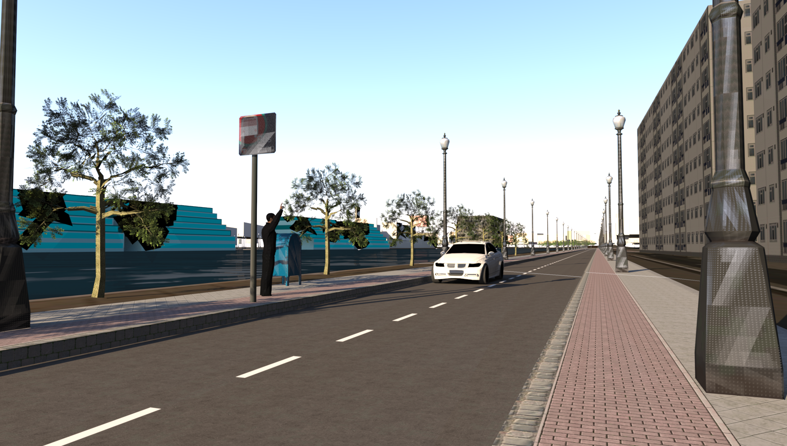
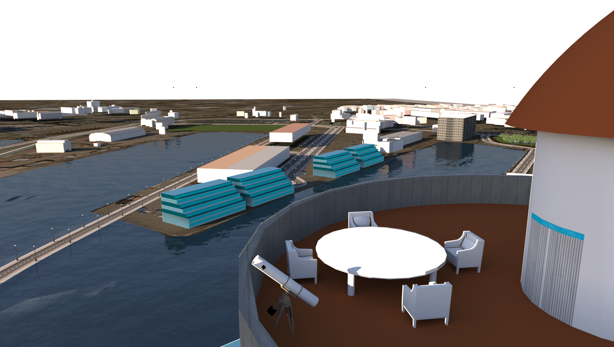

Portfolio


Namn
Slutprojekt i Teknik 1 där vi byggde om ett område i centrala Göteborg. Jag blev tilldelad frihamnen
Namn
Här ser vi en utsiktsbild från en centralt belägen byggnad som efterliknar en fyr för att anspela på det marina temat vi har i staden